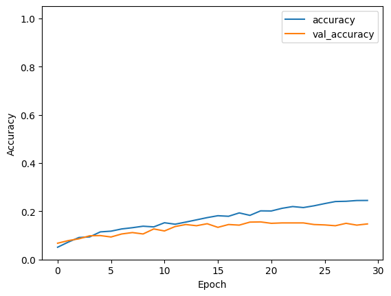
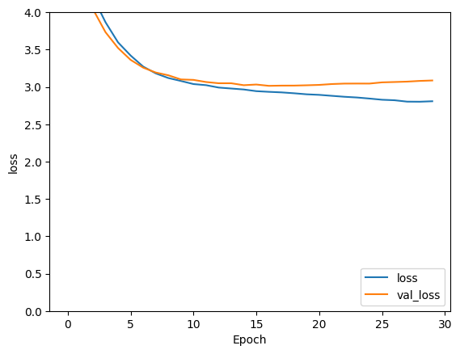
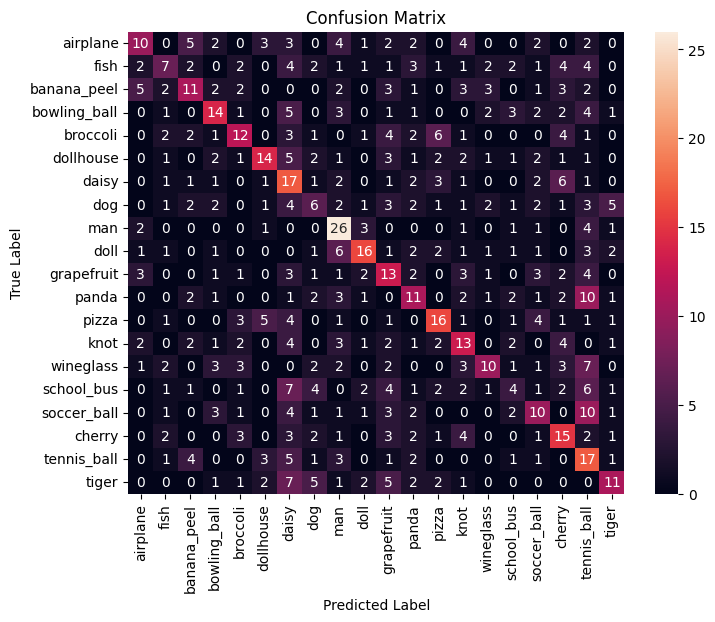

Visual Decoding with EEG
SKIL IV (PEP 398) Project
Project Description
Determining what a person is seeing based on data from the brain has been a longstanding interest in the field of neuroscience. With the advent of machine learning, visual decoding and reconstruction has become an attainable goal. Multiple groups have successfully decoded and reconstructed visual imagery with fMRI, but not as many have done this with EEG, a cheaper and simpler instrument. Very recently (in the 2020s), other groups have used EEG to successfully decode and reconstruct visual imagery, using a variety of machine learning architectures.
In this project, we created a convolutional neural network (CNN) capable of classifying what a person is looking at based on their brain activity, measured by EEG. We achieved competitive results, compared to other groups’ classification results. We plan to build upon our results and conclusions from this project as we continue our work in the 2025-2026 academic year.
Project Report
Our final project report can be found here.



Github
Code for this project can be found at our Github page.